Yasser Oussalah / Software engineering
Complex systems.
Clear thinking.
I design configurable, decoupled systems and translate complex technical constraints into clean, maintainable solutions.
Senior Backend Engineer · Software Architecture
Explore my expertise ↓SYSTEM THINKINGSELECT A LAYER ↙
Clear boundaries. Explicit data flows. Components that can evolve independently.
CORE TOOLKITJava / SpringREST APIsAngular / TypeScriptGCPDocker
Depth where it matters.
01 / Highlighted expertise01Software Architecture+
Designing distributed systems and integration architectures with explicit responsibilities, clear contracts, and decoupled components. I connect system boundaries to the data flows and implementation decisions behind them.

Click the diagram to view full size ↗
02Backend Engineering+
Architected and integrated an extensible XML transformation engine into an existing codebase, decoupling core orchestration from injectable operations configured through declarative YAML rules. Integrated the add-on and a containerized Spring Boot sidecar proxy into the repository’s runtime setup, enabling frontend access through centralized CORS handling and upstream routing without modifying existing backend services
03Interactive Experiences+
An end-to-end fitness platform where users define their fitness goals and work toward them through an immersive, gamified 3D experience. Built with Angular, Three.js, Spring Boot, and Python, The Garage connects interactive training and nutrition environments with computer-vision body analysis, personalized program generation, and progress tracking. I designed and implemented the system across frontend interactions, backend services, analysis workflows, and reporting.
04Cloud & Containers+
Working with GCP cloud services, cloud architecture, and Docker environments. Bringing application components together with attention to connectivity, configuration, and service integration.
Engineering in context.
02 / Selected projectPersonal project / Fitness platform
The Garage
An immersive fitness platform connecting a 3D environment with personalized training, nutrition management, body analysis, and progress tracking.
APPLICATIONAngular + Three.js
BACKENDJava + Spring Boot
BODY ANALYSISPython / Computer vision
ENGINEERINGService integration + Docker
Keep the core stable.
Make change configurable.
Let complexity stay behind the interface.